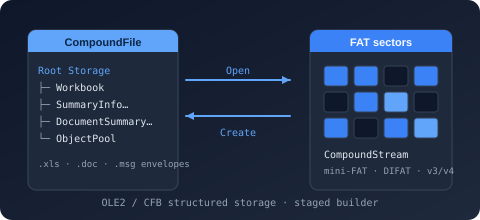

Namespace Bodu.IO.Compound.Builders

Purpose
Bodu.IO.Compound.Builders is the detached authoring object model of Bodu.IO.Compound: a mutable tree of storages and streams that you assemble in memory — from scratch, or by loading an existing container — and serialize once at the end. It is the authoring counterpart of the read-only CompoundStorage / CompoundStream navigation surface and is shaped after the JsonNode family: CompoundStorageBuilder is the JsonObject analogue (children keyed by name), CompoundStreamBuilder the JsonValue leaf, and the abstract CompoundEntryBuilder their common base. A compound file has no array or null concept, so those are the only two node kinds.
The model is staged: no file handle is held while you build, a node belongs to at most one parent at a time, and nothing is written until Save / WriteTo / ToArray lays the tree out. This is the recommended path for authoring a container; the in-place path (Create plus Commit) suits writing through a real Stream cursor instead. Large payloads need not be held in memory — a deferred stream node holds a re-openable source of known length and copies it straight to the output during serialization.
Static documentation
- Authoring compound files — the builder and in-place paths side by side, deferred payloads, editing a loaded container, options and rules.
- Bodu.IO.Compound introduction, core concepts, and getting started — the container vocabulary and the read path the builders mirror.
- Reading property sets — authoring the summary-information payload a builder stream typically carries.
Key types
Nodes
- CompoundEntryBuilder — the abstract node.
Name,Parent,Root(the topmost ancestor), andEntryType(CompoundEntryType); the directory-entry metadataClassId(CLSID;Guid.Emptywhen unassigned),CreationTime/ModifiedTime(nullwhen unrecorded), andStateBits(raw user-defined flags); the castsAsStorage()/AsStream()(each throws InvalidOperationException for the other kind); andDeepClone(), an independent, parentless copy of the node and its descendants. - CompoundStorageBuilder — a storage node and an
IDictionary<string, CompoundEntryBuilder>in one. FactoriesCreateRoot()/CreateRoot(options)(a detached root namedRoot Entry),Load(Stream)(a tree mirroring an existing container, payloads copied), andFromFile(CompoundFile, lazy)(mirror an open file;lazy: truebuilds deferred nodes that read from the file on demand, which must then stay open). Authoring:AddStorage(name),AddStream(name, ReadOnlyMemory<byte>),AddStream(name, Func<Stream> openRead, long length),AddStreamFromFile(name, path),Remove(name),Rename(oldName, newName),Clear(). Lookup:ContainsName,TryGetStorage/TryGetStream(kind-checked),EnumerateStorages()/EnumerateStreams(), plus the dictionary surface —Keys,Values,Count, the indexer,Add(key, value),ContainsKey,TryGetValue, enumeration ofKeyValuePair<string, CompoundEntryBuilder>. Serialization:Save(path, options),WriteTo(Stream, options),WriteTo(IBufferWriter<byte>, options),ToArray(options). - CompoundStreamBuilder — a stream node.
Content(the payload; reading it on a deferred node materializes the source, setting it makes the node in-memory),Length(reported without opening a deferred source),SetContent(ReadOnlySpan<byte>)/SetContent(string, Encoding?). Factories for a detached node toAddto a storage:Create(name, ReadOnlyMemory<byte>),Create(name, string text, Encoding?),Create(name, Stream source),Create(name, Func<Stream> openRead, long length)(deferred),CreateFromFile(name, path)(deferred).
Options
- CompoundBuildOptions — passed to any serializer.
Versionselects the sector size (CompoundFileVersion:V3512-byte sectors — the default and most compatible;V44096-byte sectors for larger containers);MaxDepthbounds storage nesting (0selects the built-in default of 64). - CompoundStorageBuilderOptions — passed to
CreateRoot(options).NameComparisonCaseSensitive(falseby default, matching the compound-file format's case-insensitive names).
Example
using Bodu.IO.Compound;
using Bodu.IO.Compound.Builders;
using Bodu.IO.Compound.PropertySets;
// Assemble a container: an in-memory stream, a deferred stream, a nested storage, and entry metadata.
var root = CompoundStorageBuilder.CreateRoot();
root.ClassId = new Guid("00020820-0000-0000-C000-000000000046"); // the Excel 97-2003 workbook CLSID
root.AddStream(SummaryInformation.StreamName, new SummaryInformationBuilder { Title = "Report" }.ToArray());
root.AddStreamFromFile("Workbook", "workbook.bin"); // read only at serialization time
CompoundStorageBuilder pictures = root.AddStorage("Pictures");
CompoundStreamBuilder logo = pictures.AddStream("Logo", File.ReadAllBytes("logo.png"));
logo.ModifiedTime = DateTimeOffset.UtcNow;
// The dictionary surface: same tree, IDictionary-shaped access.
if (root.TryGetStream("Workbook", out CompoundStreamBuilder? workbook))
Console.WriteLine($"{workbook.Name}: {workbook.Length} bytes");
Console.WriteLine(string.Join(", ", root.Keys));
root.Save("report.xls", new CompoundBuildOptions { Version = CompoundFileVersion.V3 });
using Bodu.IO.Compound.Builders;
// Edit a loaded container: mirror it, change it, write it back — and keep an independent copy.
CompoundStorageBuilder root;
using (FileStream source = File.OpenRead("report.xls"))
root = CompoundStorageBuilder.Load(source);
CompoundStorageBuilder snapshot = root.DeepClone().AsStorage(); // detached, parentless copy
root.Rename("Pictures", "Media");
root.Remove("Workbook");
root["Notes"] = CompoundStreamBuilder.Create("Notes", "edited", System.Text.Encoding.UTF8);
byte[] edited = root.ToArray();
byte[] original = snapshot.ToArray();
Notes
- Staged, not streamed. The tree is an ordinary object graph until serialization; there is nothing to commit or revert, and nothing touches the destination until
Save/WriteTo/ToArray. Serialization order is determined by the builder, not by insertion order. - Deferred payloads.
AddStream(name, openRead, length),AddStreamFromFile,CompoundStreamBuilder.Create(name, openRead, length),CreateFromFile, andFromFile(file, lazy: true)create nodes whose bytes are read only while serializing;Lengthis known without opening the source, and readingContentmaterializes it once. Keep a lazily mirroredCompoundFileopen for as long as the tree — or any clone of its nodes — is read or serialized. - Names and errors. An entry name is at most 31 UTF-16 code units, non-empty, and free of
/and null characters; comparison is case-insensitive unlessNameComparisonCaseSensitiveis set on the root. A duplicate or invalid name — fromAddStorage,AddStream,Add, the indexer, orRename— and a tree that cannot be represented (nesting pastMaxDepth) throw CompoundFileSerializationException; a malformed source given toLoadthrows CompoundFileFormatException. - Metadata round-trips.
ClassId,CreationTime,ModifiedTime, andStateBitsare written into the directory entry and are the same fields CompoundEntryInfo reports on read. - See also: the authoring guide, the container namespace Bodu.IO.Compound, and the property-set authoring types in Bodu.IO.Compound.PropertySets.
Classes
- CompoundEntryBuilder
Represents a node in a mutable compound-file object model — either a storage (a named container) or a stream (a named byte payload).
- CompoundStorageBuilder
Represents a storage entry in a mutable compound-file object model — a named container of child storages and streams.
- CompoundStreamBuilder
Represents a stream entry in a mutable compound-file object model — a named, file-like node carrying an opaque byte payload.
Structs
- CompoundBuildOptions
Specifies options that control how a CompoundStorageBuilder tree serializes a compound file.
- CompoundStorageBuilderOptions
Specifies options that control the behavior of the mutable compound-file object model.